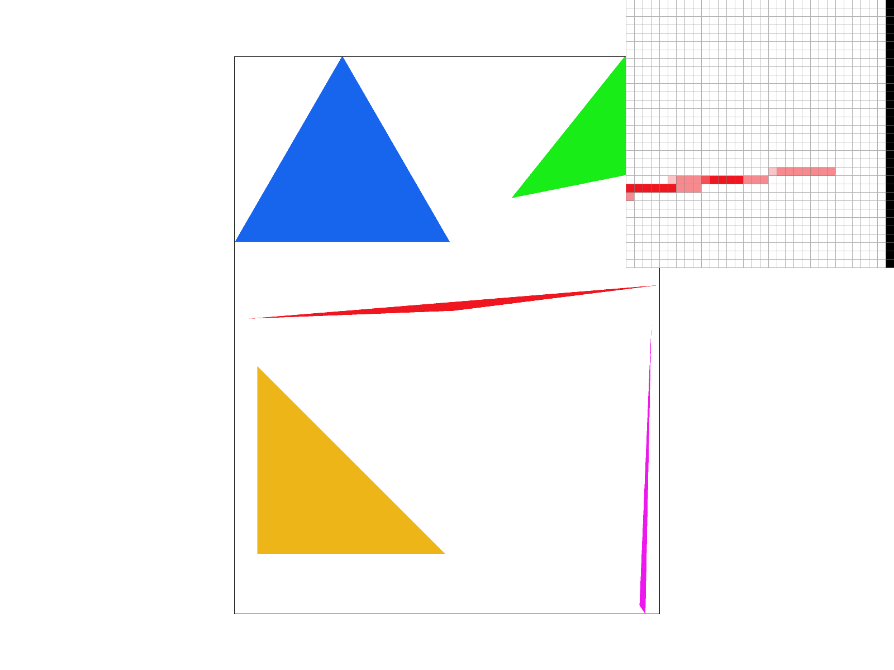
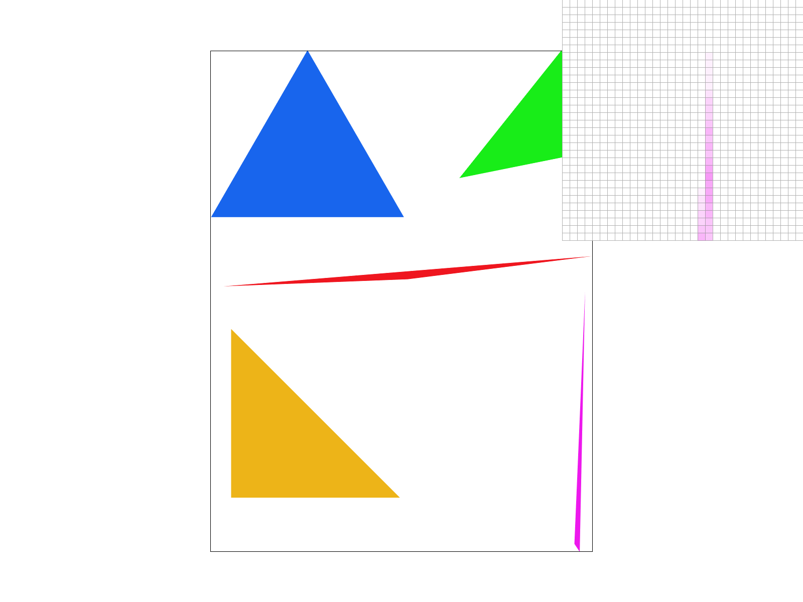
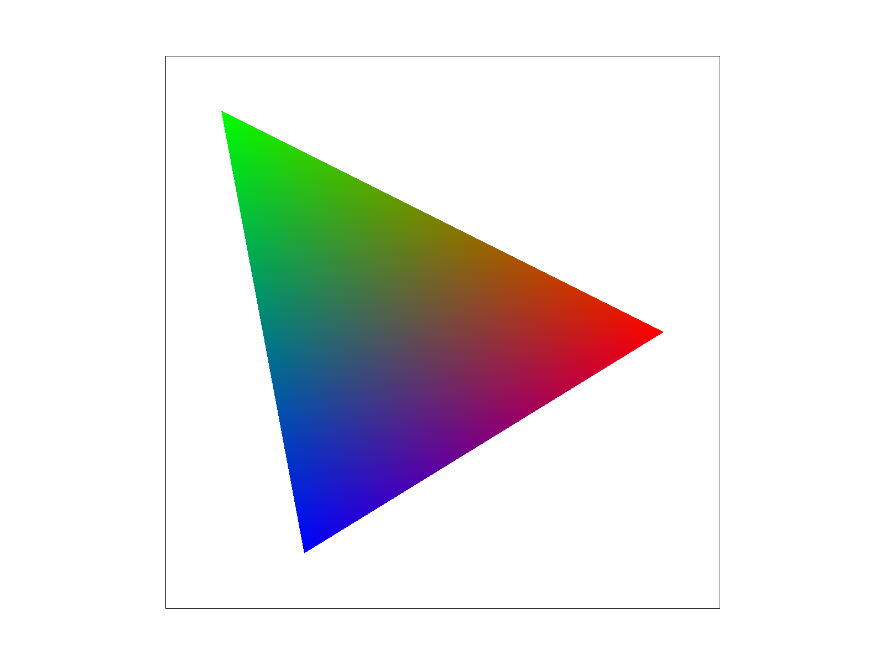
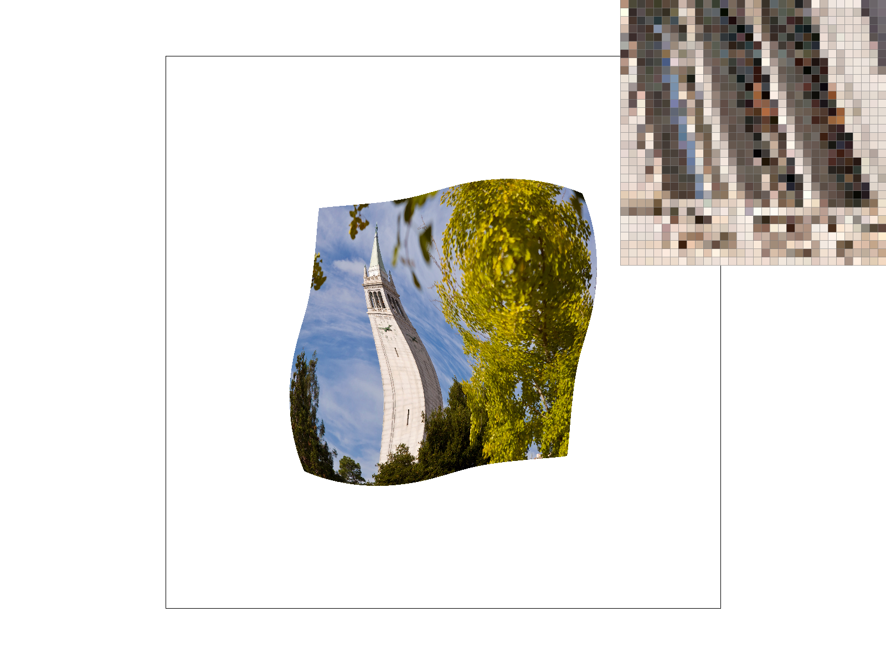
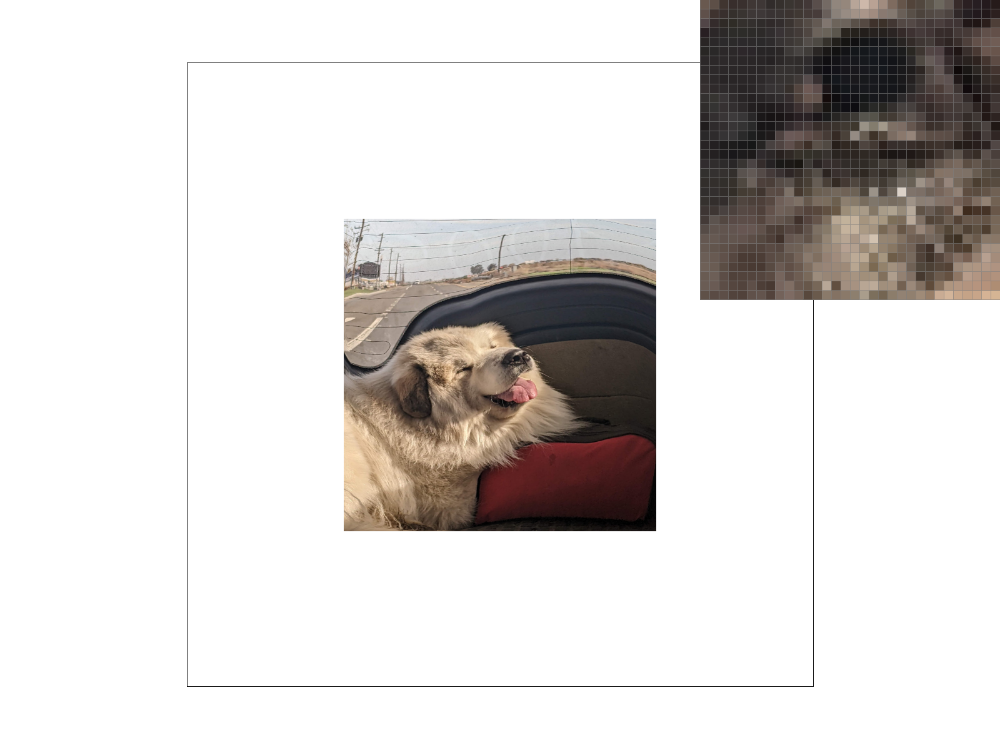
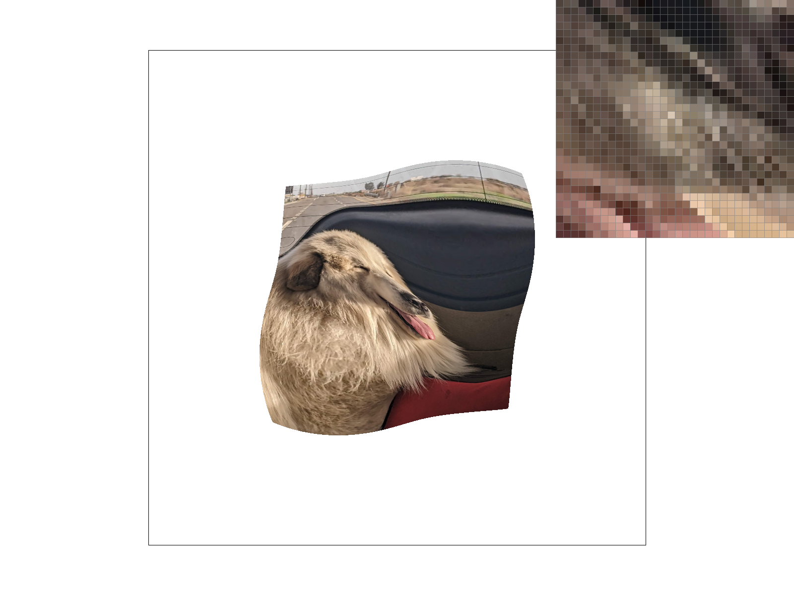
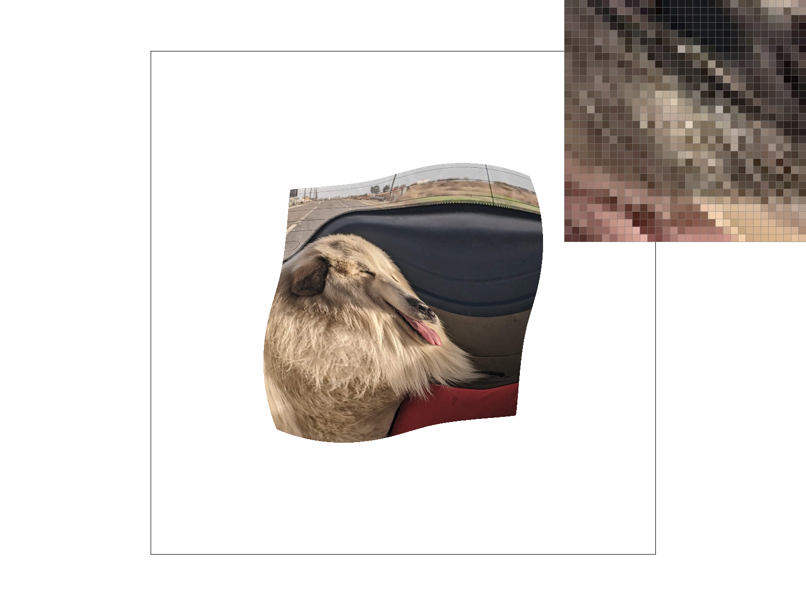

Rasterization
(CS184 Summer 2025 Homework 1 Write-Up)
~ Aagrim Hoysal ~
Overview
This is documentation from building a simple rasterizer for images, starting from drawing triangles to the screen to UV mapping and texturing with various anti-aliasing methods. Before this, my digital art experience had mostly been 2D pixel art, so this project has helped me understand why I click "nearest" instead of "linear" when making pixel art. Jokes aside, it explained a lot of the interesting intricacies of how images are rendered, and what techniques are used to remove artifacts from distortion– whether that distortion is scaling, rotating, translating, sheering, or even just taking a continuous signal and trying to fit it on a discrete finite screen.Drawing Single-Color Triangles (Task 1)
To rasterize triangles, first find the bounding box by calculating the minimum and maximum X and Y coordinates. This gives a box of candidate pixels to check. Round down on mins and round up on maxes to ensure that all possible pixels are accounted for, since we will sample at (x+.5, y+.5). We can also bound the minimum and maximum by the screen coordinates now so that we don't spend time on checking pixels out of the bounds of the screen, and we will never try to write to invalid coordinates.Next, iterate over the bounding box to check if (pixel position) + (0.5, 0.5) are in the triangle. We check this by running three dot products on the sampling test point \(T\);
- \(\vec{p_0p_1} \cdot R_{CCW}(\vec{p_0T})\)
- \(\vec{p_1p_2} \cdot R_{CCW}(\vec{p_1T})\)
- \(\vec{p_2p_0} \cdot R_{CCW}(\vec{p_2T})\)
Initially, I tried creating Vector2's and doing dot products through CGL– this ended up being slower than writing out the dot products by hand, as rotating the vectors took a while. Factoring out constant expressions in the dot product outside the loop actually decreased performance, so I left in the full dot product expression. Factoring out a
sample_triangle() function reduced computation by 10-15 cycles,
however.
Antialiasing by Supersampling (Task 2)
Supersampling consisted of enlarging the sampling buffer, sampling at more points for each pixel, and averaging those samples. I enlarged the sampling buffer proportionally to the sampling rate so that each pixel had additional space for the additional samples. Then, when rasterizing each pixel, instead of writing only one value to the buffer, I wrote the sampling rate number of samples. To do this, I picked evenly spaced sub-pixel points in a \(\sqrt{sampling~rate} \times \sqrt{sampling~rate}\) grid within the pixel to sample, and put those in the buffer. Additionally, I formatted the buffer so that all samples corresponding to one pixel were contiguous; this allows for different sampling patterns, sampling rates that aren't perfect squares, and hopefully more cache hits, but doesn't lend itself to the "high res render then downsample" intuition.Averaging the pixels was just a matter of, for each pixel of the screen buffer, taking the associated samples and doing a uniform weighted average of all the pixel colors, then pushing that to the screen buffer as the pixel's value.
The supersampling helps to reduce jaggies and moire patterns by providing intermediate values instead of just on or off for each pixel. In effect, high frequency data is filtered out by the multiple samples, which should average out the high frequencies past the nyquist within the pixel, so that it isn't aliased as low frequency data, i.e a different shape with more jagged edges.
|
|

|
|
|
|
Random Low-discrepancy aside: Other supersampling methods (Task 2 EC)
Instead of supersampling in a rigid grid, why not use another pattern? Grids might miss intersections; what if
a triangle passes right in between because it runs straight up and down, right past all the grid points?
Low-discrepancy sampling helps solve this. Low-discrepancy patterns have some properties of random numbers, but
guarantee that there are an equal distribution of points in every range as it goes to infinity. If we use a
low-discrepancy pattern in \(\mathbb{R}^2\), we can sample in a quasirandom way while still sampling evenly!
One low-discrepancy way to find points in a unit square that we can use to choose our samples is the Halton Sequence. By flipping the digits in \([1, k]\) across the decimal point in \(n\) coprime base representations, we can get \(k\) points in \(\mathbb{R}^n\) that are distributed in a low-discrepancy way. We can precompute these with coprimes 2 and 3, then use the sampling frequency to determine how many points from the Halton Sequence we take, then sample with that pattern. This avoids some artifacts from potential misses due to the regularity of grids.
|
Notice the disconnect. |
Notice the disconnect. |
|
Notice how it's much more continuous. |

Notice how it's continuous. |
Transforms (Task 3)
Transforms are quite simple. We use homogenous coordinates (3x1) to be able to translate points, with a 1 in the lower right corner to signify a point and 0 for a vector. The matrix for translation looks likeBarycentric coordinates (Task 4)

to interpolate colors at vertexes.
Notice the smooth gradient.
Because barycentric coordinates are defined as a weighted average of the three points where all weights are positive inside the triangle, we can easily use the coordinates to map things onto the triangle, such as linearly interpolating colors or lighting effects defined only at vertexes across the whole triangle at every pixel. It can also be used for UV mapping of textures onto a model.
The implementation of interpolating vertex colors was not difficult. I reduced the three equations to two by substituting \(\gamma = 1 - \alpha - \beta\), which yields \[ \begin{bmatrix} x_0 - x_2 & x_1 - x_2 \\ y_0 - y_2 & y_1 - y_2 \end{bmatrix} \begin{bmatrix} \alpha \\ \beta \end{bmatrix} = \begin{bmatrix} T_x - x_2 \\ T_y - y_2 \end{bmatrix} \equiv \begin{bmatrix} y_1 - y_2 & -(x_1 - x_2) \\ -(y_0 - y_2) & x_0 - x_2 \end{bmatrix} \begin{bmatrix} T_x - x_2 \\ T_y - y_2 \end{bmatrix} = \begin{bmatrix} \alpha \\ \beta \end{bmatrix} \] The second equation is found by inverting the matrix. This gives us values of \(\alpha\) and \(\beta\) directly, and with \(\gamma = 1 - \alpha - \beta\) gives \(\gamma\). Using the same bounding box technique, we can test if each point is inside the triangle by checking \(\alpha, \beta, \gamma \ge 0\) and then interpolate by weighting each vertex color's contribution with respect to their associated point's coefficient.
"Pixel sampling" for texture mapping (Task 5)
Texture mapping takes a triangle in screenspace, a corresponding point in texture space for each triangle vertex, and the texture itself. It then spits out, for each pixel in the triangle, a sampled point from texture space, interpolating such that the screenspace image looks close to if the corresponding texture triangle was stretched to fit the screenspace triangle.Using barycentric coordinates, we can interpolate the coordinates in texture space ("UVs") based on how close they are to each of the screenspace vertexes. However, because pixels will not match up with texels (texture space pixels), we need to be able to sample the texture at points and get back one color value– pixel sampling. Two different pixel sampling methods implemented here are nearest and bilinear. Nearest just takes the closest texel and assigns it to the screen space pixel. Bilinear takes the square surrounding the UV and interpolates between them all– first finding out the color interpolated between the left side depending on how close the UV is to each vertically, then the same for the right two pixels, and finally between the left interpolated color and right interpolated color based on the percentage of the way the UV is between the left and right.
|

|
|
|
|
|
Generally, there will be a large difference between nearest and bilinear when the sampled texture region is much larger than the region of pixels. This causes the texture to be sampled at a low frequency when there may be a lot of high frequency data, causing moire patterns and jaggies from aliasing. Nearest will perform badly on such textures because it will pick up those higher frequencies, while bilinear will perform better as it considers the neighborhood and will interpolate to get rid of some of the artifacts.
"Level Sampling" with mipmaps for texture mapping (Task 6)
Mipmaps are a way to precompute minified textures, making it faster than supersampling. This is done by level sampling, i.e computing how close together pixel samples are and choosing an appropriately (precomputed) downsampled texture to make sure the highest frequency is below the nyquist frequency. With this, you can choose either to always sample at full resolution (not using mipmaps at all), sample the closest mipmap level, or interpolate between the two closest mipmap levels.Mipmap implementation
Implementing mipmapping requires a) precomputing the downsampled texture levels, b) figuring out which downsampling level is needed, and c) potentially interpolating samples from two different mipmap levels. Precomputing downsampled textures consists of taking each texture and halving the resolution in each direction so the next image is one fourth the size. This is done recursively until the downsampled image is only one pixel, and all the images are stored alongside the original texture. The original image is stored as level 0, the one fourth sized image as level 1, one sixteenth as level 2, etc.When figuring out the downsampling level, we approximate the distance between samples by checking where the pixels below and to the right of the original would sample in texture space. The distance in texture space is then used as an approximation of distance. Intuitively, if the next pixel sample would be two texels away on the original texture, we should use the level 1 texture, as our samples would "skip" one texel in level 0 (therefore possibly aliasing) but hit all the texels in level 1 which have prefiltered the aliasing frequencies out. Similarly if the next sample was 4 texels away, level 2 would be most appropriate. Through this we can derive that for sample \(s\), the corresponding \(L\) is \[ L = \log_2( \max( \text{dist}(\text{uv}(s), \text{uv}(s_{x+1})), ~ \text{dist}(\text{uv}(s), \text{uv}(s_{y+1})) ) ) \] where the function \(\text{uv}\) returns the level 0 texel coordinates of the interpolated UV at the sampled pixel. This also needs to be clamped between 0 and the max mipmap level.
Finally, we can sample from the desired mipmap level. We can either just round the level to the nearest, or do an interpolation between the two closest levels weighted by proximity. This is done by simply sampling the integer levels above and below the floating point computed level using either nearest or bilinear as described in part 5, then interpolating the two colors based on the fractional component.
Sampling tradeoffs
The below table compares each sampling technique individually to nearest pixel, no mipmaps, no supersampling.| Supersampling | Pixel sampling (bilinear) | Level sampling | |
| Compute | Quite costly, proportional to the number of samples | Less costly, 4x samples for each corner and three lerps | Inexpensive, 1x lookup (2x if linear levels) |
| Memory | Sample buffer size grows proportional to number of samples | Almost no extra space needed | Every texture takes x4/3 the space |
| Antialias effectiveness | Very effective | Helps most with magnification, more limited with minification | Helps most with minification, little to no help with magnification |
And finally... a cross section of the final product.
|
Nearest texture sample |

Bilinear texture sample |
|
Nearest texture sample |

Bilinear texture sample |
A little extra: Anisotropic filtering (Task 6 EC)
Anisotropic filtering tries to solve the same problems as mipmaps, but with seperate filtering mechanisms that take into account the change in UV horizontally and vertically separately. I implemented an anisotropic filtering system through summed area tables, which allows for efficient area integration of arbitrary areas by precomputing the sum of the lower rectangle bounded by (0,0) and all points in the image. This can then be used by subtracting the sum of the corners on the main diagonal (low x low y and high x high y) from the secondary diagonal's points. Then by dividing by the area, we get the average value on the rectangle. If we do this for the red, green, and blue channels, we get a rectangular filter of dynamic size for a constant four samples!Now all we need is to find the size of the rectangular filter per pixel. We can then use the same approximation of how stretched the UV is based on where the UV of two neighboring pixels end up, used earlier. Then we apply the following steps, assuming \(UV_{x+1}\) is the vector from the original UV to the UV corresponding to pixel (x+1, y), and similarly for \(UV_{y+1}\):
- Calculate the area of the parallelogram with edges \(UV_{x+1}\) and \(UV_{y+1}\) by computing the cross product. This will let us figure out the "true" area that is getting sampled per pixel in texture space.
- Find the bounding box size of \(UV_{x+1}\) and \(UV_{y+1}\) with axis aligned sides. Because we must perform all our operations axis aligned, this transforms our skewed UVs into something we can work with on the texel level.
- Scale the bounding box so it has the same area as the "true" area of the original parallelogram. An easy way to do this is, for bounding box of side length \((u, v)\) and a "true" area \(A\), find \(m\) such that \((m\cdot u)\cdot (m\cdot v) = A\), and set \((u,v) := m\cdot (u,v)\). This makes sure we are filtering the same area we would have if we had an axis aligned \(UV_{x+1}\) and \(UV_{y+1}\) originally, and thus antialias the same (since the sampling rate is the same regardless of skew).
- Center the bounding box on the original \(UV\) and calculate the summed area using the table with a minimum size of a one pixel wide bounding box. Divide by area to get the average color in that area.
|
Nearest texture sample ~3400 cycles |
Bilinear texture sample ~5500 cycles |
|

~12000 cycles |

~5900 cycles |